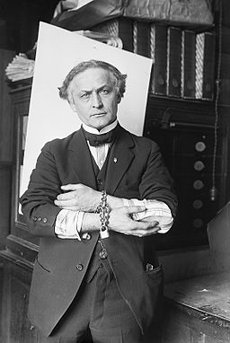
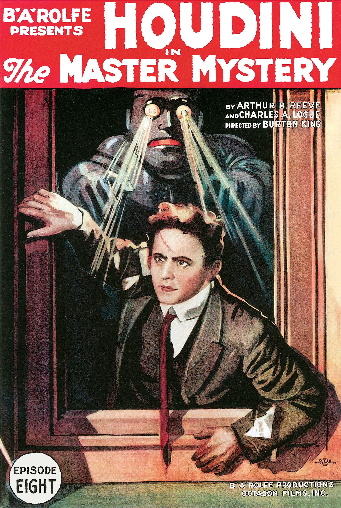
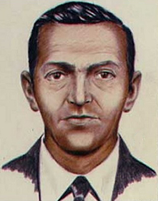

This Issue's Featured Story
Step Right Up!
Who was Harry Houdini?
Background
Born Erik Weisz, Harry Houdini was initially a long way from being one of the most celebrated magicians in the world. One of many children in a Hungarian family that moved to the States, it is said that Houdini had a tougher upbringing than many. From early in his life it was obvious that his mother was an important part of his life, and it is said that she was the prime motivation for his extensive work ethic. The name Houdini is an adaptation from the name of one of the great magicians that came before, Robert Houdin. It is also believed that Harry is derived from another prominent magician at the time, but this is somewhat debated. Houdini is, of course, Houdin with an ‘i’, as Houdini believed that it would translate as ‘like Houdin’.
Now it should probably be reinforced that Houdini was indeed a magician for much of his practice, but this would evolve into escape plans from dastardly and confining environments. Houdini would eventually become far more famous for escaping from special made handcuffs and locked prisons. These would also include a number of stunts of the same kind but in bodies of water. While Houdini was mostly unharmed, he wasn’t perfect. Medical officials sometimes stood by and Houdini could possibly be given credit for developing the modern magic show. Interestingly, one of Houdini’s known tricks was allowing himself to be punched in the stomach, which famously led to his death. At only the age of 52, the most well known entertainer of his day would pass from some odd circumstances.

Some More Information
In the era that Houdini performed, it wasn’t common to travel around the world with an act. Before the rise of Houdini, the circus was the closest thing to that, but at the time the circus took many forms and few, if any, circus performers from that time rivaled the notoriety of Houdini. Houdini was known to travel all over and sometimes even performed in the streets.

Some of Houdini’s tricks have yet to be fully understood. While some magician’s spend their entire careers trying to unlock the secrets, it is worth understanding that a result of Houdini’s sudden departure meant that he didn’t recored how any of his escapes are done. While some have been figured out, or at least to a performable level, many remain close hold and mostly forgotten. Field Note: One of the most famous exercises is when a craftsman spent approximately five years developing a set of handcuffs specifically for Houdini.
There are also some accusations that Houdini’s only real craft is fooling people, and that without the help of his wife and others he would have never acquired the fame that he did. There is, in fact, a story that claims Houdini was struggling with a set of handcuffs for nearly an hour. His wife supposedly gave him a kiss, thus the key from mouth to mouth, allowing Houdini to escape. Although it may be worth arguing to some that he suppose to escape, not make the cuffs disappear.
Some Theories
The simplest theory in this case is that Houdini was a crafty showman and possibly slick in the worst way. It is possible that Houdini was able to escape both by his wit and by the help of a kiss from his assistant. It is possible that the reason some of his tricks are unknowable is merely because he cheated, for lack of a better term. While magic is the entertainment of illusion, it is understood by the audience that the magician has all the power to conduct these tricks. If someone did help Houdini, it would explain why some of his tricks are unworkable by one’s self.
There has always been a group of people that have suggested that Houdini was a magical being. This usually, but not always, coincides with the idea that Houdini faked his death. There are variations on the story but it mostly goes something like this- the reason that Houdini’s tricks can’t be learned are because he could become etherial, and remove himself from the shackles then become solid again. While that makes a great Sci-Fi story, it still leaves a lingering question, of how would a punch to the stomach kill him? And wouldn’t a better trick be to ask someone to punch you, then become etherial causing the person to punch right though you?
Penn and Teller have referred to Houdini as a debunker instead of some sort of wizard from another planet or celestial being made of light and smoke. Houdini could certainly be a part of the long trend of debunking illusionists. There is certainly potential for this idea given the ideas behind some of Houdini’s most famous acts. From the point of view of showing what is possible, why not start with things people think are impossible? Interestingly some of Houdini’s great escapes happened off the stage or behind a curtain. While certainly within the bounds of magical illusion, it isn’t quite like Copperfield flying through the air or making the Statue of Liberty disappear. I find with Houdini there is more of an angle of escape artist that happened to be a magician.
Other Articles this Quarter
DB Cooper: We Hardly Knew You...
In November 1971, a hijacked plane with the ransom of two hundred thousand dollars, or over a million and a quarter today, flew on a predetermined flight path. The Boeing 727 was taken hostage by a middle-aged man that still has yet to be fully identified. Midair, with the back door open and the flight crew elsewhere the man known as DB Cooper jumped in the wilderness, supposedly somewhere over the south of Washington state. Later in 1980 along a bank not far from the flightpath, a portion of the money was discovered, it was rotting and possibly burned. None of the other bills have ever returned into circulation. Although it is no longer an FBI matter, some groups and individuals still look for remains of the only unsolved air piracy event. Passengers on the plane were released before the unidentified man jumped but they do recall a man with a briefcase. After the passengers were released the flight crew was grouped in the cockpit.
In the years since the event and the discovery of currency, there have been a number of suspects. None of which have truly been satisfactory by the standards of the criminal justice system. Over five decades since the events of DB Cooper and it’s worth asking how stale are the leads in a case like this. While there are certainly a lot of news stories, books and film covering this, it may have entered a stage of over saturation when it comes to the number of theories. Boeing also has discontinued the 727, it has been suggested that this was because of the DB Cooper event.
Some Theories
One camp that has gained a lot of traction is the group of people that think he simply died. The area that he would have jumped was heavily wooded. Mixed with the harsher weather conditions of late November, it is easy to surmise that it’s entirely plausible. This is compounded with the idea that none of the other bills were found. He could have simply burned them all for warmth. Some of the people that suggest that he survived believe that he could have simply left the money deep in the forest. Or left it behind altogether.

There are also suggestions that he could have survived with a few tools. A mountain of wilderness shows lend credit to the idea that it’s not impossible to live off the land with nothing more than a few tools. Proponents of the survival theory also look at the fact that the bills haven’t been used with optimism too. Because of the serial numbers, it is likely that DB Cooper never wanted to use the money in the first place. But then what motivation would Cooper have to commit this act? Perhaps the fame is all he really wanted.
Another possible theory was that Cooper was arrested for a different crime. In a hilarious fashion, there have been a number of people that have confessed to the crime. Given that there was only one person that committed the act, it seems unlikely that all of them could have done it. Also there have been a number of suspects that could have been likely. Some had impressive resumes and even had the apparent temperament to be named likely suspects. However, none of them were ever charged, but this is for a variety of reasons. One person in particular, that was arrested for different reasons, was in the special forces and shared similar features.
Brief OP-ED
I first became acquainted with DB Cooper the way most of the people my age did, the film ‘Without a Paddle’. This movie aside most of my life I knew very little. I should add that realistically, Cooper was a criminal. Hijacking a plane and ransoming its crew and passengers isn’t exactly awe-inspiring. While I don’t deny that there are individuals throughout history that are endowed with a Robin Hood mystique. I’m not sure if DB Cooper is one of them. In full honesty, I think it all makes a great Hollywood picture, and an interesting cold case. But there are really only a few layers to the story. Guy hijacks plane. Guy jumps out of plane. We can’t find the guy.
Now I’m sure that there are a million theories and I could spend all of my life tracking down the leads. Going down the rabbit hole until it connects back to aliens, ghosts or whatever else we normally cover. But there is a remarkable quality to this case. As stated, it remains the only unsolved event of its kind. I would say that actually much of the romantic nature for me are in the treasure hunters, for lack of a better word. I love that there are still people trying to solve this. If we ever solve it, I don’t know. There are some that would suggest that it has already been solved. When it comes to this story I don’t know what the best outcome is, but of all the stories I’ve researched, this is among the few that I believe still has much more to teach us.
Squids from Space!!
The OP-ED
Recently a study was published where a hypothesis was quite noticeable. Squids, Octopi and Cuttlefish, what do these things have in common? They could all be from space! Before this gets out of hand, I should note that this is far from proven one way or another. But the idea has gained more traction than one might initially think. Field Note:Even the newer show ‘Resident Alien’, based on the comic of the same name, plays on the idea of cephalopods being from another world besides ours from time to time.
I was first introduced to the idea during a lecture, during a break the lecturer made the remark that they had read the study. I remember thinking that this must be a joke, but sure enough with a little digging and googling I found news stories and journals mentioning it. Without question this is one of my favorite stories I learned this year. Let’s just say for a moment that there is a Legion of Doom style lair at the bottom of the ocean and cephalopods are running the greatest scam in history, where exactly does that take science? Nowhere, we would have discover it first. What could be giving rise to this hypothesis is merely our lack of understanding of our oceans. While we do know more than ever about this subject, we still could learn far more than we could imagine. That’s what makes science exciting to me.
Interestingly, due to new studies, it appears that we can quite rule out the space critters idea. Now it’s worth noting once more, even at the sake of being redundant, that this is only one of a few theories. But as we learn more about the creation of the planet we understand that impacts by comets and such bring various materials from distant corners from the galaxy. This creates a looming question, what if that could affect evolution.
So what are some other hypothesizes? Well like the shark, it is possible that these creatures actually have just been on the planet for a long time, and only really evolve on a marginal level. Sharks are relatively unchanged for the most part over the course of millions of years. Furthermore, as has been said over past decades, we may have a better understanding of Outer Space than our own oceans. This is increasingly true as groups like NASA and others make headway on returning to the stars. But there is also a physics problem to address in that. Ironically, it made continue to be easier to explore the depths of space than submerge something deep into the ocean. Which leads us to one of the most important questions in Marine Biology regarding cephalopods. Why don’t they have bones? The simplest explanation is an adaptation to the heavy pressure of the ocean deep. So while they may seem incredibly foreign to any land animal that we encounter, there is a biological reason that actually makes a lot of sense.
One thing that researchers point out is that most if not all cephalopods express a curiosity similar to that of mammals. This includes, but not limited to, inspecting foreign objects and seemingly learning at great lengths. While it may seem like evidence to point directly at the stars, it may be worth remembering that whales and dolphins are said to possibly be smarter than a human. While whales and dolphins are mammals, we are just beginning to learn in depth about how emotionally connected whales can be with one another, this is in part what led to the end of SeaWorld’s famous shows.It should also be pointed out that for one reason or another the cephalopod has always had a mythic portrayal. We don’t have to look much further than stories of the Kragen and other sea beasts to get a glimpse into what our ancestors though in regards to these animals.